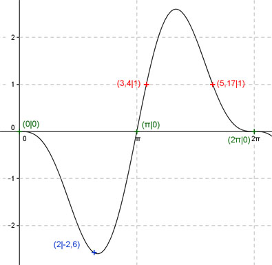
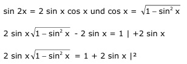
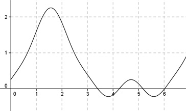

Aufgabe 225 Ergänzen Sie die Wertetabelle für x zwischen 0 und 2π: y = sin 2x - 2 sin x Periode = 2π x 2 3,4 oder 5,17 y -2,6 1 Berechnung der Nullstellen: 0 = sin 2x - 2 sin x mit sin 2x = 2 * sin x * cos x 2 sin x * cos x - 2 sin x = 0 2 sin x * (cos x - 1) = 0 2 sin x = 0 --> x = 0 + k * π mit k = 1, 2, 3, ... cos x - 1 = 0 |+1 cos x = 1 |:2 cos x = 1 --> arc cos 1 = 0 oder 2π. x1 = 0 oder 0°, x2 = π oder 180°, x3 = 2π oder 360°. Berechnung der Amplitude A: 5,17 - 3,4 Sie tritt an der Stelle x = 3,4 + (------------) = 2 = 4,285 oder 245° gerundet auf. Amplitude = f(245°) = A = |sin 2 * 245° - 2 * sin 245°| = |0,766 - (-1,81)| = = 2,576 = 2,6 gerundet  x = 2 f(2) = sin (2 * 2) - 2 sin 2 = = sin (2 * 114,6°) - 2 sin 114,6° = -2,6 gerundet Berechnung der x-Werte für y = f(x) = 1 f(x) = 1 eingesetzt, existiert zweimal zwischen π und 2π bzw. 180° und 360° (siehe Graph). An welchen Stellen x die Funktion den Wert 1 annimmt, ist elementar nicht zu ermitteln. Zur Berechnung wendet man ein Näherungsverfahren an, hier die Regula falsi. sin 2x - 2 sin x = 1 mit  4 sin2 x (1 - sin2 x) = 1 + 4 sin x + 4 sin2 x 4 sin2 x - 4 sin4 x = 1 + 4 sin x + 4 sin2 x |+4 sin4 x 4 sin2 x = 1 + 4 sin x + 4 sin2 x + 4 sin4 x |-4 sin2 x 4 sin4 x + 4 sin x + 1 = 0 |:4 sin4 x + sin x + 0,25 = 0 |:4 Als Funktion: y = sin4 x + sin x + 0,25  Abgelesen: Nullstellen zwischen 3,3 und 3,5, zwischen 4,2 und 4,4, zwischen 5 und 5,2 und zwischen 5,9 und 6,1. (Vorzeichenwechsel für f(x)) Regula falsi: x0 = gesuchte Nullstelle x1 * |y(x2)| + x2 * |y(x1)| x0 = ------------------------------ |y(x1)| + |y(x2)| Nullstelle x0 zwischen 3,3 und 3,5 mit Excel ermittelt: A B C D E F G H I J 3,3 3,5 0,0856 0,0929 0,2826 0,3251 0,6077 0,1785 3,4041 -0,0049 3,3 3,4041 0,0049 0,0929 0,0162 0,3161 0,3324 0,0978 3,3988 -0,0002 3,3 3,3988 0,0002 0,0929 0,0007 0,3157 0,3163 0,0931 3,3986 0,0000 3,3 3,3986 0,0000 0,0929 0,0000 0,3156 0,3157 0,0929 3,3986 0,0000 Die gesuchte Nullstelle ergibt sich nach mehreren Näherungen mit ausreichender Genauigkeit zu x01 = 3,4 gerundet. Die Nullstelle x02 zwischen 4,2 und 4,4 ergibt sich nach dem selben Verfahren zu 4,25 gerundet. Die Nullstelle x03 zwischen 5 und 5,2 ergibt sich nach dem selben Verfahren zu 5,17 gerundet. Die Nullstelle x04 zwischen 5,9 und 6,1 ergibt sich nach dem selben Verfahren zu 6 gerundet. Weil zwischendurch quadriert wurde, ist eine Probe nötig. Für x01: sin (2 * 3,4) - 2 sin 3,4 = 0,494 -(-0,511) = 1 Lösung Für x02: sin (2 * 4,25) - 2 sin 4,25 = 0,8 -(-1,79) = 2,59 keine Lösung Für x03: sin (2 * 5,17) - 2 sin 5,17 = -0,793 - (-1,794) = 1 Lösung Für x04: in (2 * 6) - 2 sin 6 = -0,537 - (-0,559) = 0,02 keine Lösung Gesuchte x-Werte: x1 = 3,4 oder 194,8° x2 = 5,17 oder 296,2°.